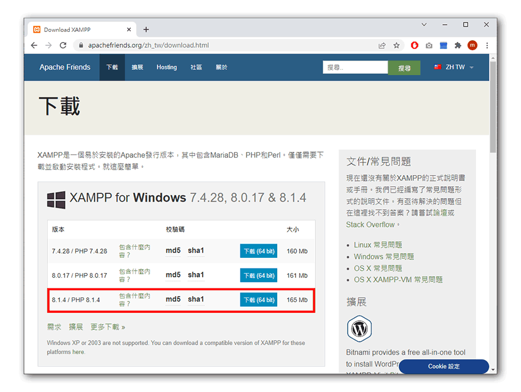
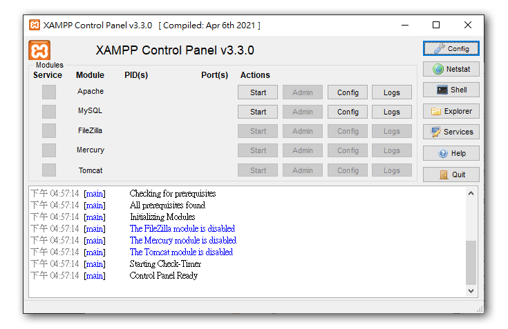
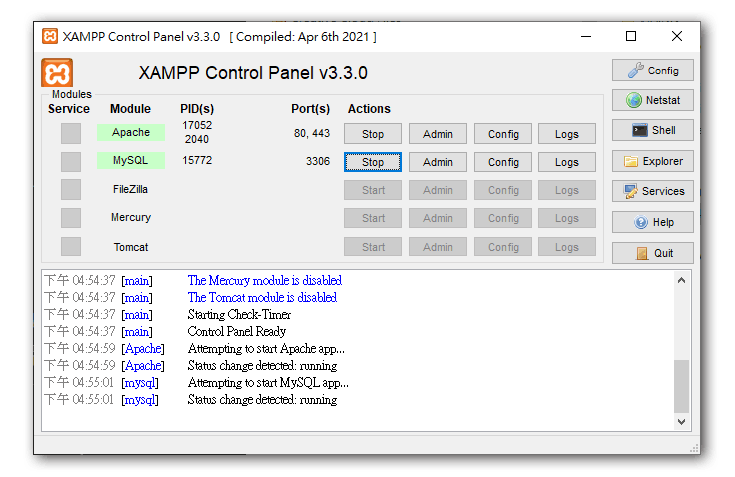
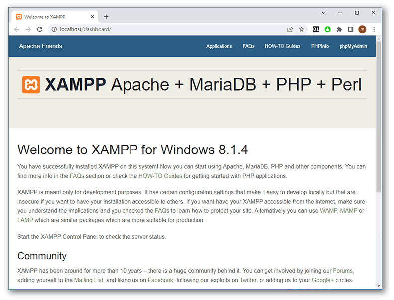
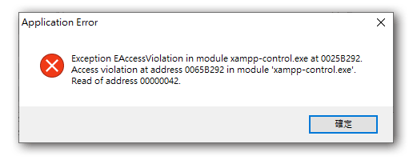
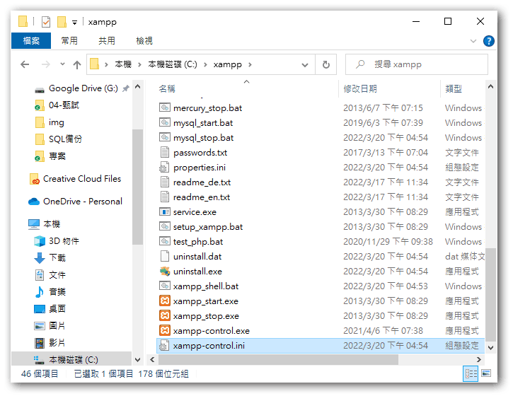
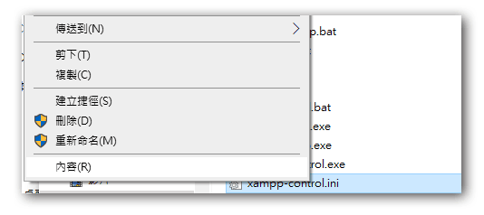
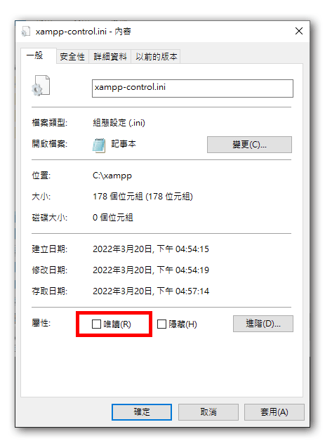
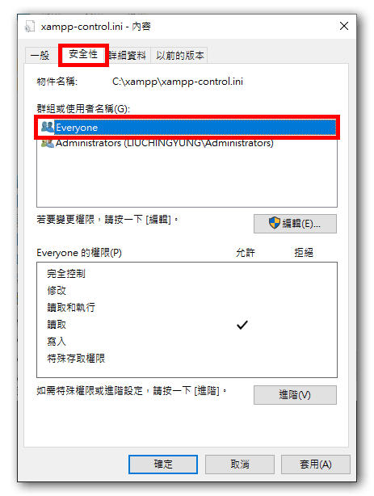
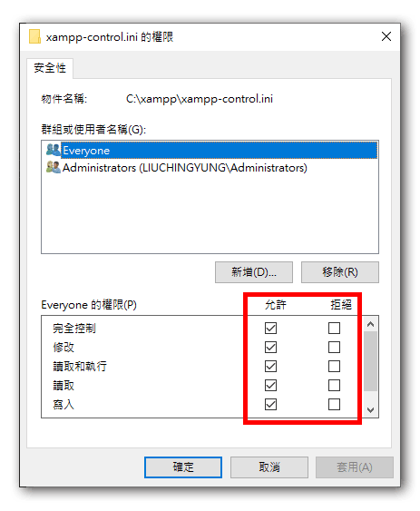

Xampp 整合型網頁開發套件
xampp為一個整合型的網頁開發環境套件，裏頭已經先行整合了網頁常用的開發環境需要的設定和套件，包含了 **網頁伺服器(Apache)、資料庫(MySQL)、程式語言(PHP)、資料庫管理軟體(PhpMyAdmin)**，因此推薦給剛入門的新手來安裝使用，省去逐個下載安裝設定的麻煩。
該套件有不同平台的版本，也有虛擬機的版本，長期有專人在更新版本，為本機端開發者常用的整合型套件。
Apache - 目前主流的網頁伺服器，負責所有http及https的請求和回應，同類選擇還有 nginx
MySQL - 目前被Orcale收購，但有社群免費版本，原作者另外開發了全免費的 mariaDB 開放給大眾使用，不過一般人還是會用MySQL來同時稱呼MySQL及mariaDB
phpmyadmin - 可以搭配 MySQL 及 mariaDB 使用的圖形化資料庫管理軟體
PHP - PHP為目前網站後端使用頗多的程式語言，加上歷史悠久，相關的維護及更新需求一直都存在，同類的選擇有C#、Java、Ruby、Python、node.js …etc
1.下載Xampp
首先，直接在瀏灠器上輸入關鍵字 xampp ，即可找到xampp的官網或下載頁面：

進入下載頁面後，請下載8.x以上版本，7.x系列的PHP版本將在2022年停止生命周期(EOL)，本課程屬於網頁程式設計的基礎，內容適用於各個PHP版本，但為統一課程的進行，所以選擇最新的版本做為課程的開發環境：

2.執行安裝
使用瀏灠器下載完成後會在左下角顯示下載已完成的提示，點擊左下角的下載檔名稱即可開始安裝，如果是下載後將安裝檔放在別的目錄或磁碟機的，則找到安裝檔後，直接連點安裝檔即可開始安裝。


點擊next按鈕後即可以開始安裝

接著進入安裝細節畫面，由於我們先以PHP網頁設計為目標，因此可以先取消勾選無關的其它套件和軟體，這可以加快安裝的速度，同時也提高開發環境的穩定性。

在解壓縮安裝前，xampp會先跳出一個瀏灠器視窗來宣傳xampp的官網，請先關閉這個視窗或最小化，可以看到安裝畫面在瀏灠器後面，此時再點擊next按鈕後才算真正開始安裝


安裝過程大約三至五分鐘，完成後會跳出安裝完成的訊息畫面，點選finish按鈕來完成安裝並啟動xampp

在啟動視窗中點選Apache項目的start按鈕及MySql的start按鈕，如果兩個都呈現綠燈即表示安裝成功，如果無法正常啟動，則查看錯誤訊息來排除，或重新安裝。


點選admin按鈕會開啟瀏灠器，如果畫面顯示正常，表示Apache運作正常。

如果在啟用Apache和MySQL時跳出防火牆警告，表示電腦是第一次安裝Xampp相關的軟體，請按允許存取來讓這兩個軟體可以通過防火牆來運作.


在部份windows 10的環境下，如果xampp安裝在c槽，有可能會在關閉或退出xampp時出現如下的警告：

這是因為xampp中的設定檔xampp-control.ini被設為唯讀或是使用者沒有修改檔案權限的關係。
請先到C槽中的xampp安裝目錄中找到xampp-control.ini

點擊滑鼠右鍵叫出功能選單，選擇最下方的 內容 功能

將檔案屬性中的 唯讀 勾選取消，之後就可以正常關閉xampp並更新設定

如果取消唯讀還是有錯，請進一步變更使用者權限
在 內容 功能選單中選擇 安全性 頁籤，並選擇 Everyone 或登入的使用者類型

選擇 編輯 按鈕進入修改權限，將權限從唯讀變更至可寫入及修改以上，之後確定即可

3、變更網站根目錄
網站的開發一般是以專案為一個單位，反應在電腦中的具體呈現方式就是資料夾目錄，因此我們會習慣一個網站的內容都放在同一個資料夾來保存維護，如果要建立新的網站或新的專案，則會開啟另外的資料夾目錄來存放；但是Apache安裝完成時，預設的網站目錄為c槽下的\xampp\htdocs目錄，如果我們想開啟新的專案或將網站存放在別的位置時，則需要變更Apache管理的網站目錄路徑，這樣Apache才會認識我們自己建立的網站目錄，並且呈現網站內容。
首先，先在電腦中的任何磁碟區位置，建立一個用來存放專案網頁檔的資料夾，這裏以F槽為例，建立了一個web目錄
接著在xampp的控制台視窗 中，點選Apache項目後的config按鈕，在彈出選單中找到Apache(httpd.conf)項目：
預設會以記事本的方式來開啟httpd.conf檔，這個檔案中記錄了所有Apache這個軟體在啟動及運作時會用到的設定值，請按下鍵盤上的Ctrl+F組合鍵來開啟尋找視窗，在輸入框中輸入documentroot來尋找根目錄路徑的設定值：
如下圖；在DocumentRoot及Directory兩個設定項目的後方將原本的C:/xampp/htdocs改成我們在F槽建立的web目錄，改完後記得存檔，並且需要先關閉Apache再開啟才會生效。
重啟Apache後再按下Admin按鈕即可發現瀏灠器呈現的頁面內容和剛安裝時的內容不一樣，此時因為目錄中沒有任何檔案，因此畫面應該會是和下圖一樣：
其它相關設定
xampp的預設編輯器修改
Xampp預設使用windows內建的記事本做為編輯器，但某些設定檔在記事本中沒有斷行，使用上不是很方便，因此我們可以修改預設編輯器，指定其它編輯器來替代
在Xampp control Panel中選擇最右側功能按鈕中的config按鈕
畫面跳出設定畫面，其中第一個項目就是預設編輯器的設定，填入替代的編輯器執行路徑即可

VS Code 預設路徑為 C:\Users\user\AppData\Local\Programs\Microsoft VS Code\Code.exe
資料庫帳號密碼變更
在Xampp安裝完成時，預設的資料庫是沒有密碼的，在學習和單機開發階段，為了方便，通常會保持無密碼的狀態，但如果要正式上線或對外公開時，則需要設定密碼，以防任何人都可以連入資料庫進行存取。
這裏我們透過phpmyadmin來進行資料庫帳號密碼的修改，首先在Xampp control panel中的MySQL模組中按下admin項目按鈕或是在瀏灠器的網址列鍵入http://localhost/phpmyadmin，即可連上Phpmyadmin

在php的首頁上點選使用者帳號項目，即可看到MySQL的使用者帳號；
點選root帳號的編輯權限功能即可修改密碼


Phpmyadmin登入密碼修改
由於Phpmyadmin只是一個MySQL的輔助管理工具，因此Phpmyadmin需要有MySQL的帳號密碼才能連線使用，資料庫的預設密碼被修改後，Phpmyadmin就無法連線進資料庫進行管理作業，因此需要一併修改phpmyadmin的連線設定，才能正常使用。
在Xampp control panel中的Apache模組中，選擇config按鈕，並執行 phpMyAdmin(config.inc.php) 項目，即會開啟phpmyadmin的設定檔，

找到其中 / *Authentication type and info ***/** 的認證設定區塊，可以看到phpmyadmin的預設認證方式是透過 config 檔來連線資料庫的，因此必須在 config 檔中先提供資料庫的帳號密碼給phpmyadmin。

在下方的設定項目中的[‘password’]中填入你資料庫的密碼，存檔後再次連線MySQL或是在網址鍵入http://localhost/phpmyadmin，即可重新連入資料庫
1 |
|
PHP
在初學階段，Xampp預設的PHP環境己經足夠使用，所以不太需要再做什麼設定上的修改，以下提供幾項常見的設定供學員了解：
PHP的設定檔名為php.ini，一樣可以在Apache的config按鈕中找到。
短標籤
原本PHP的語法需要包在<?php......?>區塊中才能被執行，短標籤的作用是讓區塊語法可以縮短成<?.....?>，大多數的虛擬空間都有開啟短標籤的設定，但是要小心和其它類似語法衝突。
1 | short_open_tag=On |
時區設定
在php.ini中進行時區設定的話，則全伺服器都會共用這個設定，因此在設定時要先確認網站要服務的地區為何；
1 | [Date] |
上傳檔案大小限制
原本的PHP設定限制上傳單一檔案的大小為2mb，不過目前Xampp預設的上傳限制已經調升到40mb了，足夠一般的使用；
1 | upload_max_filesize=40M |